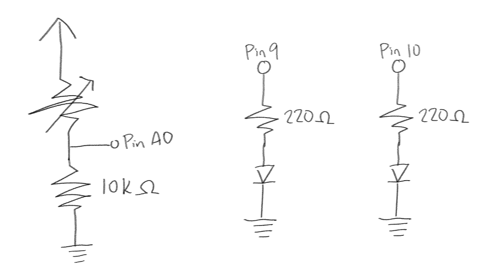
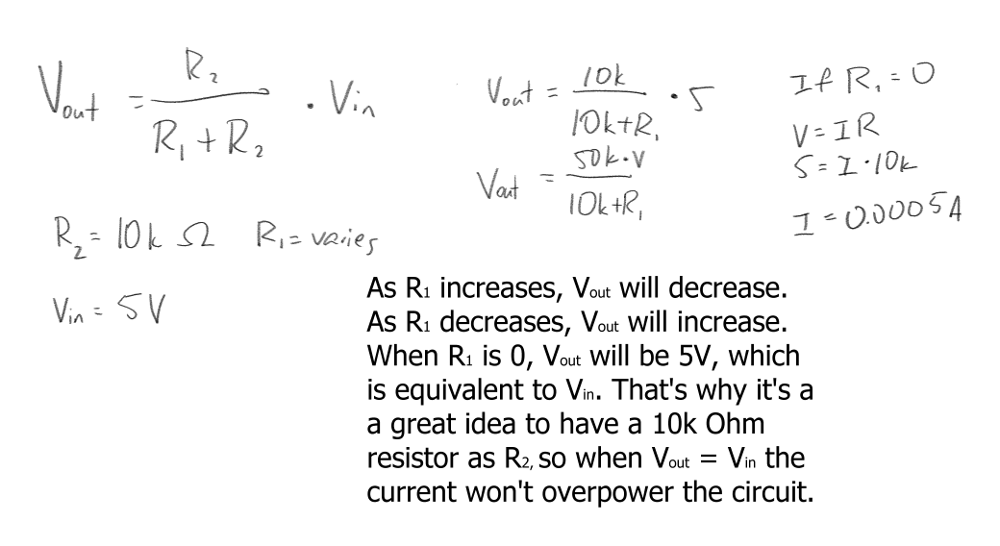
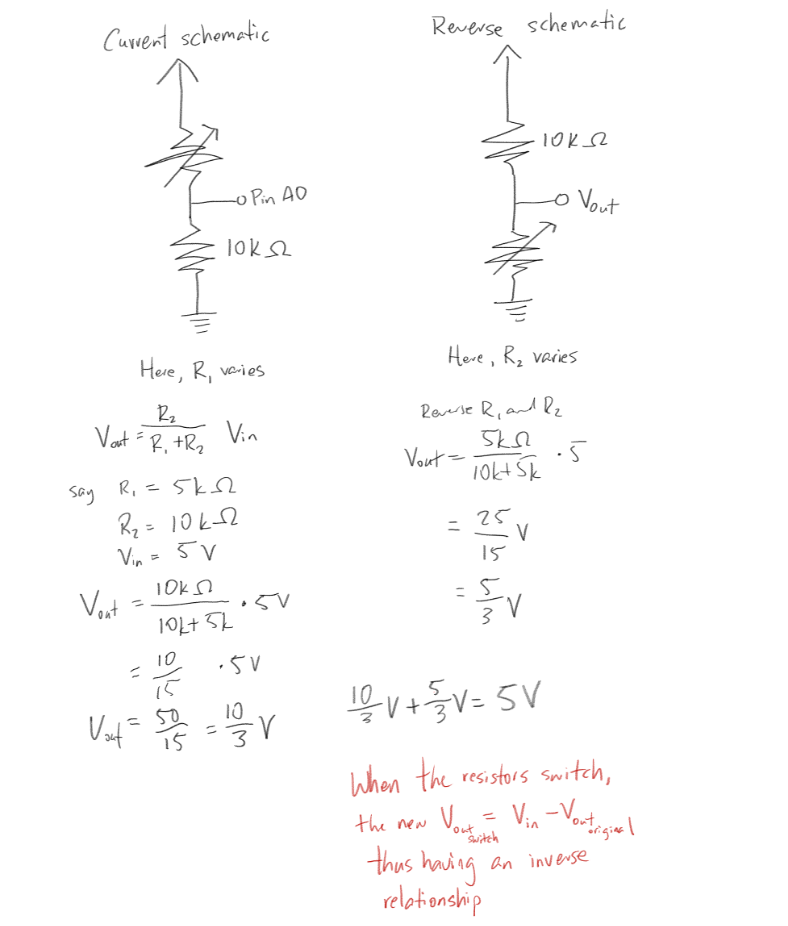

Here is all the documentation for assignment 3!
Here is all the documentation for assignment 3!
Here is an image of the circuit I had created.
Above is an image of the schematic of the circuit.
Here I explain the relationship between the variable resistor (photoresistor) and the voltage you can measure at that point.
// These constants won't change. They're used to give names to the pins used:
const int analogInPin = A0; // Analog input pin that the potentiometer is attached to
const int analogOutPin = 9; // Analog output pin that the LED is attached to
const int analogOutPin2 = 10; //Analog output pin that the LED is attached to, two!
int sensorValue = 0; // value read from the pot
int outputValue = 0; // value output to the PWM (analog out)
int outputValue2 = 255; // value output to the PWM (analog out)
int sensorMin = 1023; // minimum sensor value
int sensorMax = 0; // maximum sensor value
void setup() {
// calibrate during the first five seconds
while (millis() < 5000) {
sensorValue = analogRead(analogInPin);
// record the maximum sensor value
if (sensorValue > sensorMax) {
sensorMax = sensorValue;
}
// record the minimum sensor value
if (sensorValue < sensorMin) {
sensorMin = sensorValue;
}
}
// initialize serial communications at 9600 bps:
Serial.begin(9600);
}
void loop() {
// read the analog in value:
sensorValue = analogRead(analogInPin);
sensorValue = constrain(sensorValue, sensorMin, sensorMax);
// map it to the range of the analog out:
outputValue = map(sensorValue, sensorMin, sensorMax, 0, 255);
// map it to the range of the analog out, but with an inverse relationship
outputValue2 = map(sensorValue, sensorMin, sensorMax, 255, 0);
// change the analog out value:
if(outputValue < 15) { //checks that light levels of the photoresistor
analogWrite(analogOutPin, 0); // sets analogOutPin to 0 if under a certain amount of light, which turns off an LED
analogWrite(analogOutPin2, 255); // sets analogOutPin2 to 255 if under a certain amount of light, which turns on an LED completely
} else { // if over a certain amount of light
analogWrite(analogOutPin, outputValue); // sets analogOutPin in accordance to the amount of light the photoresistor detects. If more light, the more it lights up.
analogWrite(analogOutPin2, outputValue2); // sets analogOutPin2 in inverse to the amount of light the photoresistor detects. If more light, the more it gets.
}
// print the values of sensorValue, outputValue, and outputValue2 to the Serial Monitor:
Serial.print("sensor = "); //prints "sensor"
Serial.print(sensorValue); //prints out the value that the photoresistor senses
Serial.print("\t output = "); //prints out "output"
Serial.println(outputValue); //prints out the original mapped value
Serial.print("\t output2 = "); //prints out "output2"
Serial.println(outputValue2);
// wait 100 milliseconds before the next loop for the analog-to-digital
// converter to settle after the last reading:
delay(100);
}
Yes. The code won't work as expected, but it is something you can work around easily. Below is my work.
This graph is based off of the serial numbers below for sensorValue specifically.
If we had a 10-bit PWM and we had to read a 8-bit value, I would map it from 0 - 255 to 0 - 1023. If we had a 16-bit PWM and we had to read a 10-bit value, I would map it from 0 - 1023 to 0 - 65535. This is based on how binary works. The max val of n-bit integer is (2^n)-1. When n = 10, (2^10)-1 = 1023. When n = 16, (2^16)-1 = 65535.